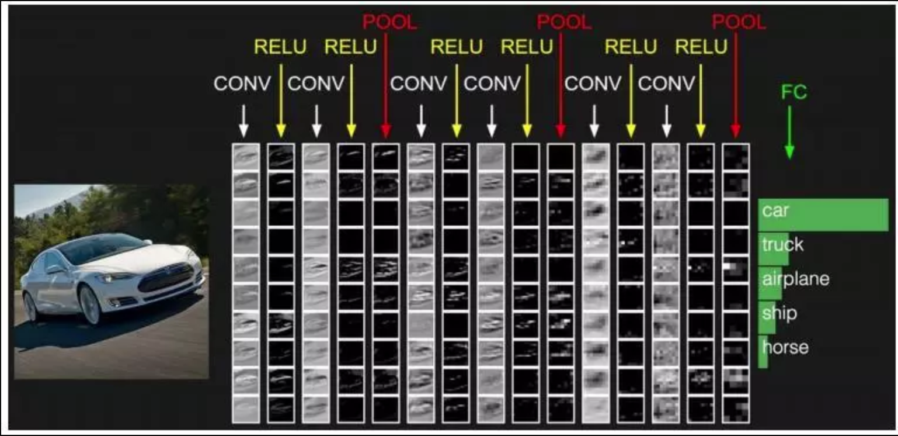
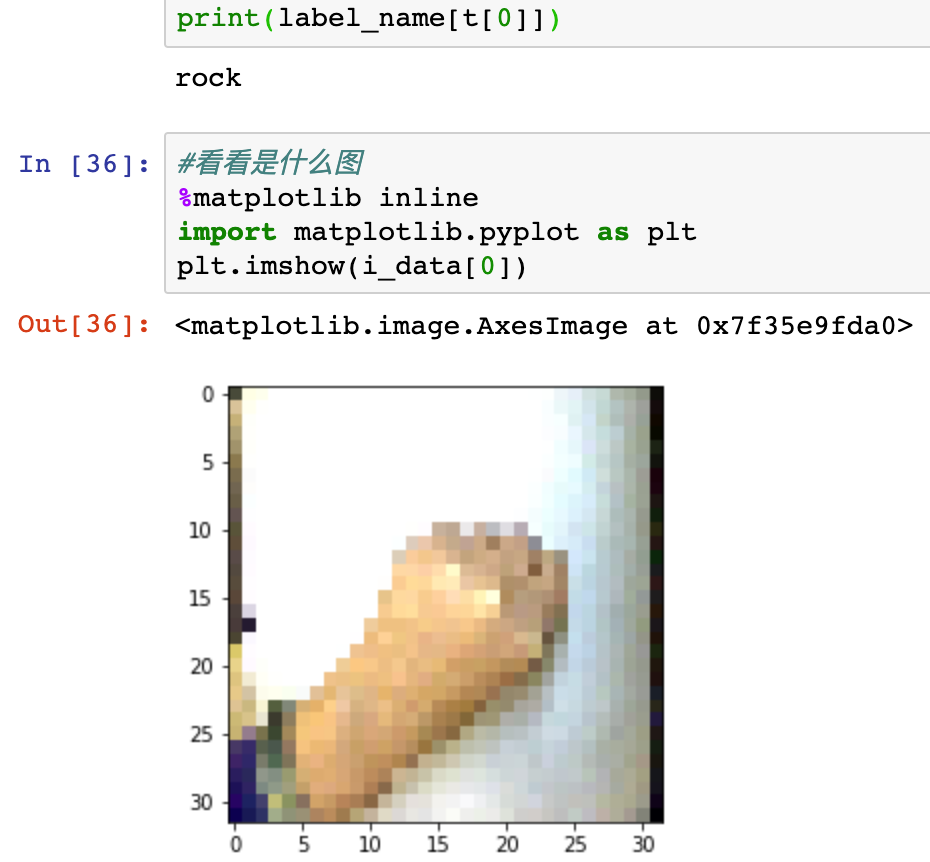

9. 在虚谷号上训练“石头剪刀布”模型¶
案例提供：谢作如（温州）
本案例利用卷积神经网络（CNN）来识别“石头剪刀布”手势。数据集（手势图片）来自网络，分为石头、剪刀、布三种手势，用于训练数据集中每一种手势有841张，测试的有125张。每一张图片已经处理为128*128像素，三个通道。案例接近生活，尤其适合用在虚谷号上。利用USB摄像头，虚谷号就可以识别用户的手势。
9.1. 原理介绍¶
人工神经网络(Artificial Neural Network， ANN) ，通常简称为神经网络，是一种在生物神经网络的启示下建立的数据处理模型。神经网络由大量的人工神经元相互连接进行计算，根据外界的信息改变自身的结构，主要通过调整神经元之间的权值米对输入的数据进行建模，最终具备解决实际问题的能力。我们可以这么认为，神经网络是一个什么都不知道小朋友（黑盒子），我们不停教育他，告诉他这是什么，那是什么，慢慢地他就积累了知识（形成了模型），能够分辨了。

卷积神经网络是一种带有卷积结构的多层神经网络。由于图像的空间联系往往是局部的，因此每个神经元不需要对全部的图像进行感知，只需要感知局部特征，并在更高层将这些不同感知的局部神经元连接起来综合处理即可。并且在卷积神经网络中，不同神经元之间的参数(卷积核)可以共享。因此，使用卷积神经网络可以有效的减少神经网络模型的训练参数，并且具有一定程度对图像位移、缩放、非线性变形的稳定性。
卷积神经网络的结构一般是将输入的图像进行多次卷积、池化，在多次卷积、池化的的过程中图像的图像的尺寸会越来越小、特征会越来越明显，最后输入全连接层完成预测或者分类任务。
虚谷号的算力虽然比不上普通的家用电脑，但是用来训练不多的图像数据，还是比较快的。
9.2. 准备工作¶
1）环境搭建。
案例选择了keras框架，需要先安装keras和tensorflow。Keras是一个由Python编写的开源人工神经网络库，可以作为Tensorflow、Microsoft-CNTK和Theano的高阶应用程序接口，进行深度学习模型的设计、调试、评估、应用和可视化。
虚谷号教育版已经预装必要的库，可以直接使用。下面是安装命令：
pip install keras
pip install -i https://pypi.tuna.tsinghua.edu.cn/simple tensorflow
注：tensorflow的安装选择清华源，速度将快很多。
2）数据准备和清洗
数据集来源：http://www.laurencemoroney.com/rock-paper-scissors-dataset/
下载解压后，发现是按照文件夹分类存储的“石头剪刀布”的图片，分为三个文件夹，分别用于训练（rps）、验证（rps-test-set）和交叉验证（rps-validation）。rps和rps-test-set文件夹中都已经分成了三类，’rock’为石头，’scissors’是剪刀，’paper’是布。为了让数据集更小一点，我用Python写了一个脚本，批量将每一张图片处理为128 * 128像素。
已经处理好的数据集可以通过Github下载，在“课程汇集/虚谷号内置课程目录/5.机器学习”中，文件名为“hand.tar”，约40M。
如果用虚谷号进行训练，请上传hand.tar到data文件夹下，然后用tar命令解压。参考命令：
- ::
cd ~/Jupyter/vvBoardBook/5.机器学习/data tar -xf hand.tar
这次使用的数据集没有提供标签数据，需要自己写程序来整理。我先写一个遍历文件夹的函数。
#遍历文件夹中图片的函数
import os
image_types = (".jpg", ".jpeg", ".png", ".bmp", ".tif", ".tiff")
def list_images(basePath, contains=None):
# 返回有效的图片路径数据集
return list_files(basePath, validExts=image_types, contains=contains)
def list_files(basePath, validExts=None, contains=None):
# 遍历图片数据目录，生成每张图片的路径
for (rootDir, dirNames, filenames) in os.walk(basePath):
# 循环遍历当前目录中的文件名
for filename in filenames:
# if the contains string is not none and the filename does not contain
# the supplied string, then ignore the file
# 无意中发现mac处理的文件夹会生成“._”开头的文件，于是过滤
if contains is not None and filename.find(contains) == -1 or filename[0:2]=='._':
continue
# 通过确定.的位置，从而确定当前文件的文件扩展名
ext = filename[filename.rfind("."):].lower()
# 检查文件是否为图像，是否应进行处理
if validExts is None or ext.endswith(validExts):
# 构造图像路径
imagePath = os.path.join(rootDir, filename)
yield imagePath
#定义标签对应的数字，石头为0，剪刀为1，布为2
label_num=["rock","scissors","paper"]
#得到训练文件夹中的图片文件列表
rps_Paths = sorted(list(list_images('./data/hand/rps/')))
#得到验证文件夹中的图片文件列表
test_Paths = sorted(list(list_images('./data/hand/rps-test-set/')))
得到图片文件的列表后，批量用keras.preprocessing的load_img读入，然后同步根据文件夹名称在label_num中得到标签值。具体的介绍可以参考前面的几个案例。
from keras.preprocessing import image
import numpy as np
# 生成训练集数据
rps_data = []
rps_labels = []
for imagePath in rps_Paths:
r_img = image.load_img(imagePath,target_size=(32, 32))
r_img = image.img_to_array(r_img,dtype="uint8")
rps_data.append(r_img)
# 读取标签，并且用0，1，2来编码
#(在“./dataset/rps-test-set/paper/testpaper01-00.png”中取出“paper”)
t = imagePath.split(os.path.sep)[-2]
# 将“paper”之类的单词转换为0，1，2
rps_labels.append(label_num.index(t))
rps_data = np.array(rps_data)
rps_labels = np.array(rps_labels)
# 生成验证集数据
test_data = []
test_labels = []
for imagePath in test_Paths:
r_img = image.load_img(imagePath,target_size=(32, 32))
r_img = image.img_to_array(r_img,dtype="uint8")
test_data.append(r_img)
t = imagePath.split(os.path.sep)[-2]
test_labels.append(label_num.index(t))
test_data = np.array(test_data)
test_labels = np.array(test_labels)
这样，我们就准备好了数据。
9.3. 训练过程¶
1）搭建模型
通过以下代码建立卷积神经网络模型并进行编译。注意几个关键点：
第一层要设置输入图片的尺寸和颜色通道，“32,32,3”。前面为了训练速度快一点，读入的图片为32*32； 最后一层，神经元的数量为3，因为只有3个类别。
import keras
from keras import layers
from keras import datasets
model=keras.models.Sequential()
model.add(layers.Conv2D(64,(3,3),activation='relu',input_shape=(32,32,3))) #第一层要设置输入图片的尺寸和颜色通道
model.add(layers.Conv2D(64,(3,3),activation='relu'))
model.add(layers.MaxPool2D())
model.add(layers.Conv2D(64,(3,3),activation='relu'))
model.add(layers.Conv2D(64,(3,3),activation='relu'))
model.add(layers.MaxPool2D())
model.add(layers.Flatten()) #在全连接之前，需要将二维图片数据转换成一维数组
model.add(layers.Dropout(0.5)) #为了防止过拟合，Dropout层会随机的丢弃一部分神经网络连接
model.add(layers.Dense(256,activation='relu'))
model.add(layers.Dense(3,activation='softmax')) #使用softmax处理多分类问题，一共3个类别
#在训练过程中打印出准确率（acc）指标
model.compile(optimizer='adam',loss='sparse_categorical_crossentropy',metrics=['acc'])
2)训练模型
在虚谷号上batch_size要设置小一点，比如200。实测batch_size设置大于600，jupyter服务将挂起。如果是电脑上，可以设置为1000或者更大一点，但不要超过总样本数（2520）的一半，训练的速度快一点。
model.fit(x=rps_data,y=rps_labels,batch_size=200,epochs=5,validation_data=(test_data,test_labels))
batch_size设置为200的情况下，前三轮loss一直处于10左右，第四轮开始，loss快速下降。10个轮次后，就loss就到了0.01以下。每一轮次需要95秒，还是能够接受的。

3)测试模型
下面是利用虚谷号的摄像头拍摄图片的代码，没有摄像头请跳过，直接上传一张名为test.jpg的带手势的图片。“5-model-hand.h5”就是我训练出来的模型。
注意：摄像头要朝下拍摄手势，样子要和训练用的图片一致。
from keras.preprocessing import image
import numpy as np
from keras.models import load_model
model = load_model('./model/5-model-hand.h5')
import cv2
#基本函数1：获取摄像头内容保存为图片
def getcampic(fname):
cap = cv2.VideoCapture(0) # 打开摄像头
ret, frame = cap.read() # 读摄像头
cv2.imwrite(fname,frame)
cap.release()
cv2.destroyAllWindows()
return True
##调用getcampic函数
getcampic("test.jpg")
label_name=["rock","scissors","paper"]
i_data=[]
r_img = image.load_img("./test.jpg",target_size=(32, 32))
r_img = image.img_to_array(r_img,dtype="uint8")
i_data.append(r_img)
i_data = np.array(i_data)
t=model.predict_classes(i_data)
#直接输出名称
print(label_name[t[0]])
执行上面程序后，虚谷号启动摄像头拍摄一张图片，这个目录下将增加一个名为test.jpg的图片。需要注意的是，背景最好也是白色的，和用于训练的图片一致。
这张“石头”的图片，被成功识别出来了。
9.4. 项目总结¶
通过这个案例，我们发现虚谷号之类的迷你电脑，也能够用来做神经网络方面的案例。限于算力有限，我们不能做数据太多结构太复杂的模型训练，但是已经训练好的模型，让虚谷号导入应用还是非常容易的。
训练好的模型，以及具体的训练过程，都已经提供了“.pynb”文档，整合在虚谷号教育版的固件中。